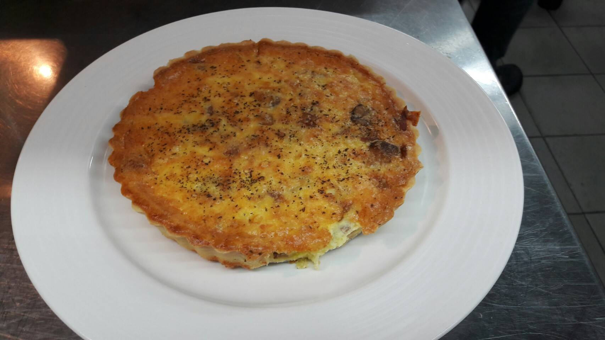

做法
派皮 低粉190克、高粉24克放一起過篩 餡料 ，加入鹽1克跟糖5克混合、放入奶 洋蔥320克切小丁、培根96克切小丁 油126克切小丁，混合把奶油分開 、蘑菇75克切厚片，熱油鍋，下蘑菇 （粉油拌合法）不可讓奶油融化， 炒上色加入洋蔥炒金黃色，在下培根 呈現粉粒狀，再加入50克的水（分次加） 炒至熟，下鹽一平匙（最小支）
拌至不黏鋼，放入袋子裡鋪平，放冰箱15-20分。 、黑胡椒少許。 蛋奶汁 全蛋3顆打散加入鮮奶油225克、 鹽1匙半（最小隻湯匙，）、起司 粉7.5克、黑胡椒少許拌一拌即可。 派皮大195克 小46克，桿圓（不 可以太薄），用桿麵棍捲起舖在 派模上方，貼合，用叉子輕插平 均，舖上烤培紙在上面放上豆子 舖滿，，烤箱200/200烤20分， 旁邊金黃把烤培紙拿起，再放入 烤1分鐘，舖一層薄的起司絲， 下餡料平均，在下起司絲、再放 入蛋奶汁與塔皮平行，第二次入爐190/190烤18-20分。